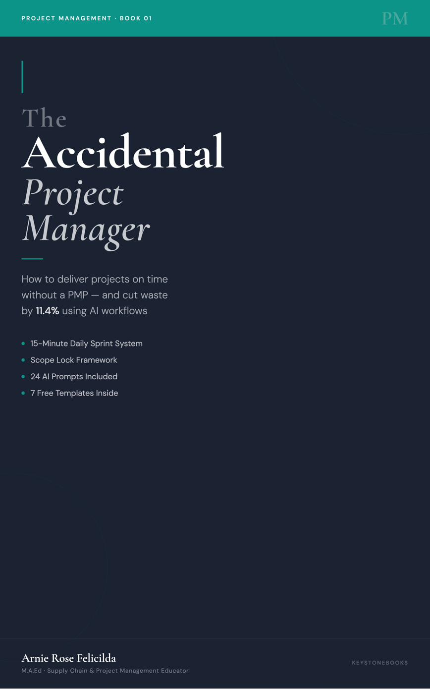

A project that is behind schedule is not a failed project. It is a derailed project. The difference matters because derailed projects can be recovered. Failed projects cannot. Most project managers do not know the difference between the two because no one taught them the recovery process. This post does.
The three-step recovery process below works regardless of how far behind the project is, how long it has been off track, or how complex the project is. What it requires is honesty about the current state and the willingness to stop adding work before you start fixing the problem.
Step 1. Stop All New Work Immediately
The first action in any project recovery is a full stop on new tasks. No new features. No new deliverables. No additional requests from stakeholders until the recovery plan is approved and the baseline is reset. This is the step most project managers skip because it feels counterintuitive. The project is already behind. How does stopping help?
It helps because adding more work to a project that is already behind makes it more behind. The team is already stretched. Adding tasks to a stretched team does not accelerate delivery. It distributes focus across more work and slows everything down further. Stop first. Diagnose second. Restart with a clear plan third.
Step 2. Find the Root Cause, Not the Symptom
A missed deadline is a symptom. The root cause is what needs to be identified and addressed. Common root causes include scope that expanded beyond what the team can deliver in the available time, resource availability that changed after the project started, external dependencies that were delayed, or unrealistic estimates in the original plan that no one challenged at kickoff.
Ask three questions to find the root cause. What was the first sign that this project was going to miss its date? What changed between when the plan was made and when the problem appeared? What would need to be different for this project to deliver on a revised timeline? The answers to these three questions identify the root cause in most cases.
The most important rule: Do not adjust the timeline without finding the root cause. A new deadline attached to the same broken plan will also be missed. Fix the cause, then set the new date.
Step 3. Build a New Plan, Get Written Approval, Restart
Once the root cause is identified, build a revised plan. This means a new baseline: a reset scope if necessary, updated milestones with realistic dates, and a clear statement of what will be delivered by when. Present this revised plan to your sponsor with three things: what happened and why, what the new plan is, and what you need from the sponsor to make the new plan work.
Get written approval before restarting any work. A verbal "yes" in a meeting is not enough. An email confirmation that the sponsor approves the revised scope and timeline creates accountability and prevents the revised plan from being revised again at the next status meeting.
Once approval is in writing, restart. Brief the team on the new plan. Assign clear owners to every milestone. Run the daily sprint system from day one of the recovery. Check milestone progress weekly against the new baseline. Do not allow new scope additions until the project is fully recovered.
How to Communicate a Recovery Plan to Stakeholders
Stakeholders handle project delays better than they handle surprises. A project manager who comes to a stakeholder with a problem and a solution earns credibility. A project manager who comes to a stakeholder with a problem and no plan loses it.
The communication template is: "The project is currently behind schedule by X days due to [root cause]. I have developed a recovery plan that delivers [revised scope] by [new date]. I need your approval on [specific decision] to proceed. I can present the revised plan today." Short, factual, solution-focused.
Use the free Project Recovery Checklist from the tools section to walk through every step of this process. It is available immediately when you subscribe at the homepage.
Also on Pinterest: 📌 Free Project Management Templates — 5 Interactive Tools

Book 01 — Available Now
The Accidental Project Manager
How to deliver projects on time without a PMP and cut waste by 11.4% using AI workflows. 15-Minute Daily Sprint System, Scope Lock Framework, and 24 AI Prompts included.
Get the Book →More Project Management Reads
- How to Stop Scope Creep Before It Derails Your Project
- How to Manage Projects Without a PMP. The 15-Minute Sprint
- How Operations Managers Can Actually Use AI on Projects
- The Difference Between a Busy Project and a Healthy One
- How to Recover a Project That Is Off the Rails
Free Project Management Tools
Get free tools built for project managers who learned on the job.
Charter template, sprint system, dashboard, recovery checklist, and AI prompt library. All free. Delivered instantly.